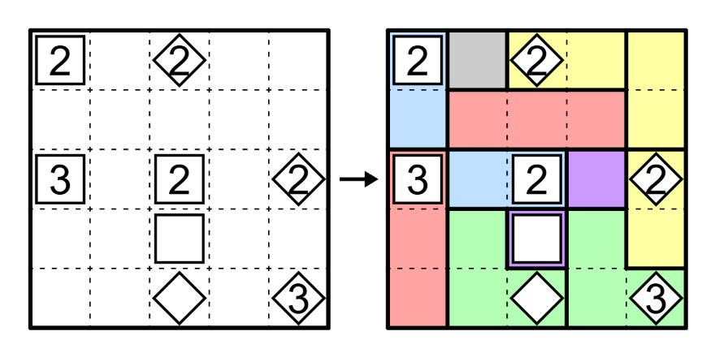

Kusane Hexaku's Logic Puzzle Genres
Sometimes I try to invent a genre. The successful-ish ones goes here.
Quick Jumps
Gemini Flushed
Rules
⬣ Draw a single non-branching loop that visits all regions at least once.
⬣ Regions with the same letter must contain the same set of completely identical loop segments with no rotations or mirroring, but not necessarily in the same relative positions.
⬣ Regions with different letters must contain at least one differing loop segment.

You can try some of them here on PuzzleSquare JP
It's a genre that's very inherently tricky --- both to solve, but especially to set.
Nevertheless, I very much enjoy the almost NIKOJI-like logic of it. It hasn't catch on yet, but one day I hope it will.
Gemini Touched
Rules
⬣ Divide the grid into regions, each containing zero or one clue cell.
⬣ Numbers indicate the size of the region it's in.
⬣ Regions with a Diamond must share an edge with at least one other region of the same shape, rotation and mirroring included.
⬣ Regions with a Square may not share an edge with any region of the same shape, but must share a corner with at least one other region of the same shape, rotation and mirroring included.
You can try some of them here on PuzzleSquare JP
This ruleset went through quite a bit of modification comparing to its initial form,
particularly the Corner touch rule, due to some interesting edge cases brought up by testsolvers.
This doesn't really have any relations to Gemini Flushed, but when I was considering a name for this genre,
two regions of the same shape touching can kinda be described as "twin regions", thus the Gemini-ness.
It also rhymes, which helped with the decision.